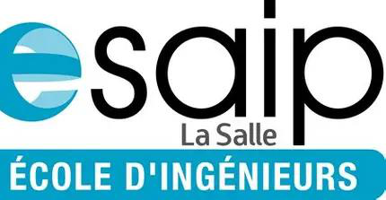
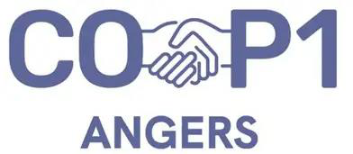
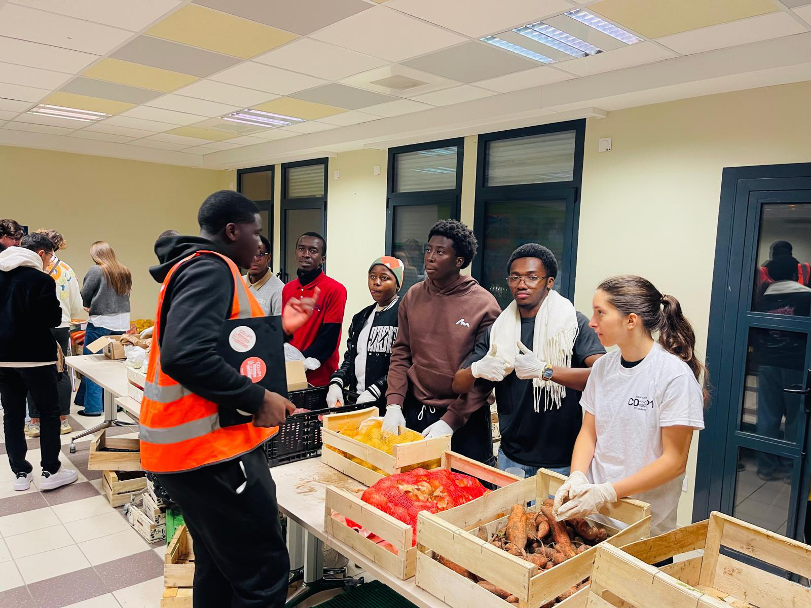
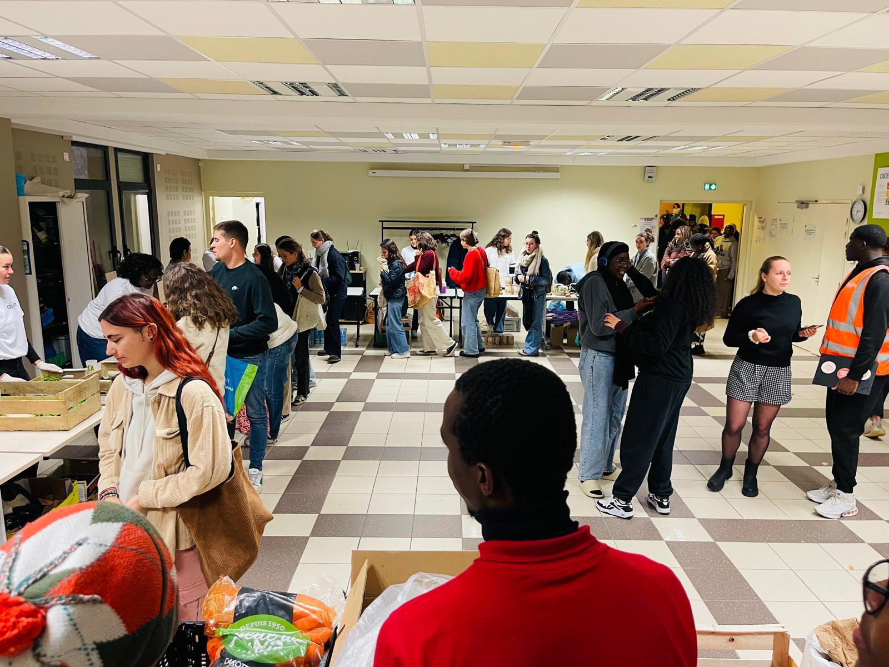
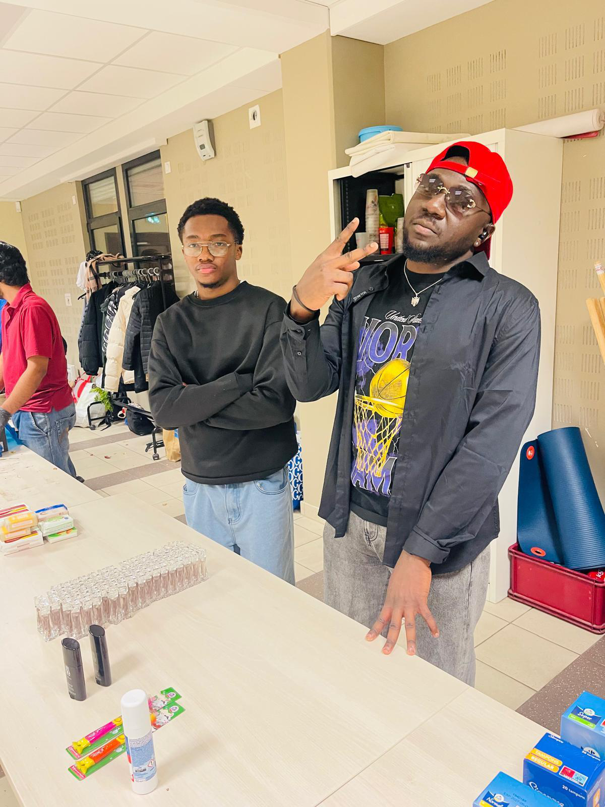

« Donner à manger, c'est semer l'humanité »
Auteur
Germain Mike DAYAWA
Filière
ING4 — Semestre 8
Établissement
ESAIP Angers
Année universitaire
2025 - 2026
Ce livret vient clôturer ma seconde année d'engagement au sein de l'association Cop 1 – Solidarités Étudiantes Angers. En ING3, je découvrais le milieu associatif et le fonctionnement de l'aide alimentaire. Pour cette année d'ING4 (S8), ma démarche était différente : je voulais m'appuyer sur mon expérience pour être immédiatement opérationnel.
La précarité étudiante sur le campus d'Angers reste malheureusement une réalité très concrète, et les besoins logistiques de l'association sont immenses. Continuer cette mission me permettait de prendre davantage de responsabilités, de former les nouveaux bénévoles et d'optimiser concrètement les temps de distribution.
Période
Sept. 2025 – Mai 2026
Localisation
COP 1 Angers
Volume total
~70h (ING3 + ING4)
Ayant déjà les bases opérationnelles, je me suis orienté cette année vers des tâches demandant plus d'anticipation et de coordination d'équipe, réparties sur deux pôles principaux.


| Objectif opérationnel | Indicateur de réalisation | Statut |
|---|---|---|
| Participer activement au cycle S8 | 12 séances assurées entre sept. 2025 et mai 2026 | |
| Maintenir le volume d'engagement | ~35h réalisées sur la période ING4 | |
| Transférer les compétences | Binômage et tutorat de 5 nouveaux bénévoles | |
| Fiabiliser la distribution | Anticipation des réassorts (taux de rupture réduit en séance) |
Savoir encadrer de manière informelle : intégrer les nouveaux, répartir les tâches selon les besoins de l'instant et maintenir un bon niveau de motivation pendant l'effort.
Optimiser l'espace, anticiper les ruptures d'approvisionnement sur les tables de don, et fluidifier le parcours des étudiants pour éviter les attentes trop longues.
Interagir avec tact et bienveillance face à un public parfois dans des situations délicates. Savoir désamorcer les petites tensions liées à l'attente.
Trouver des solutions rapides face aux imprévus (manque d'un produit, absence d'un bénévole) pour garantir la continuité du service.

Si l'on analyse l'organisation d'une banque alimentaire, on y retrouve des mécaniques très proches de celles de l'ingénierie : gestion de ressources limitées, optimisation de processus et résolution d'incidents en temps réel. Cette deuxième année m'a permis de prendre du recul sur mon propre rôle au sein d'une organisation.
Passer du statut d'exécutant (en ING3) à celui de bénévole expérimenté m'a confronté à la réalité du "management transversal". Coordonner une équipe tournante, sans lien hiérarchique, demande de la pédagogie, de l'écoute et une bonne capacité d'adaptation.
Dans mon futur métier d'Ingénieur en Cybersécurité, la technique ne fait pas tout. La capacité à gérer des crises, à communiquer clairement sous pression et à organiser le travail d'une équipe sont des facteurs déterminants. Mon passage à la COP 1 m'aura non seulement rappelé l'importance de l'engagement citoyen, mais il constitue aussi un excellent terrain d'entraînement pour mes futures responsabilités professionnelles.